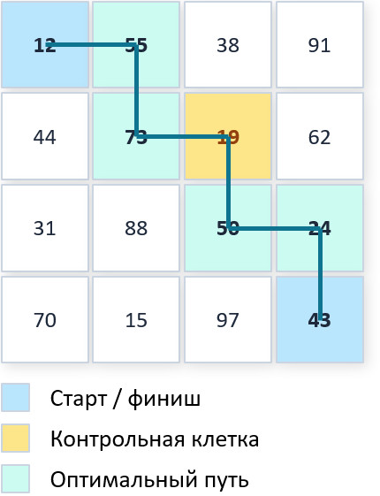

О проекте
В курсовой работе исследуется задача о максимальной сумме с обязательной клеткой (МСОК) на прямоугольной сетке. Рассматриваются три подхода: генетический алгоритм, муравьиный алгоритм и метод случайного поиска. В качестве эталона используется точное решение методом динамического программирования.
Цель работы - провести сравнительный анализ эффективности трёх метаэвристических и эвристических методов по критерию точности найденного решения при фиксированном временном бюджете.
Задачи работы
- Изучить теорию генетических алгоритмов и адаптировать их к условию обязательной клетки.
- Изучить муравьиные алгоритмы (ACO) и реализовать соответствующий модуль на C++.
- Разработать метод случайного поиска как базовый уровень сравнения (baseline).
- Реализовать точное решение задачи методом динамического программирования.
- Создать генератор тестовых сеток с тремя режимами распределения весов.
- Провести серию вычислительных экспериментов и статистически обработать результаты.
Постановка задачи
Дана прямоугольная сетка N × M. Каждой клетке (i, j)
сопоставлен неотрицательный вес w(i, j) ≥ 0. Задана обязательная
(контрольная) клетка (r, c).
Требуется построить путь P из клетки (1, 1)
в (N, M) при условиях:
- каждый шаг - только вправо или вниз;
- путь обязан проходить через контрольную клетку (r, c);
- целевая функция - сумма весов посещённых клеток - максимизируется.
Формально:
F(P) = Σ w(i, j) → max, (i, j) ∈ P
Ключевое свойство задачи - разложимость на две независимые подзадачи:
путь от (1,1) до (r,c) и путь от (r,c)
до (N,M). Это используется и в динамическом программировании,
и при кодировании хромосом в ГА.

Рассмотренные методы
1. Точный метод - динамическое программирование
Основан на принципе оптимальности Беллмана. Выполняются два прохода: прямой (от старта до контрольной клетки) и обратный (от контрольной клетки до финиша). Оптимум вычисляется как:
F_opt = dp_fwd(r, c) + dp_bwd(r, c) − w(r, c)
Сложность: O(N·M) по времени и памяти.
2. Генетический алгоритм (ГА)
- Кодирование: двоичная хромосома из двух сегментов - путь до и после контрольной клетки. Число единиц в сегменте фиксировано, что гарантирует допустимость.
- Отбор: турнирный, размер турнира
k = 2. - Кроссовер: одноточечный с процедурой починки (repair) для сохранения числа единиц.
- Мутация: swap-мутация двух битов разных значений, вероятность
p_m = 1/L. - Замена: элитизм размера 1.
Параметры: P_size = 100, p_c = 0.8, p_m = 1/L.
3. Муравьиный алгоритм (ACO)
- Две независимые феромонные матрицы - для сегмента до и после контрольной клетки.
- Вероятностный выбор направления по правилу:
p ∝ τ^α · η^β, где η - нормированный вес целевой клетки. - Обновление феромона: испарение + накопление
Δτ = Q / F(P).
Параметры: m = 50 муравьёв, α = 1.0, β = 2.0, ρ = 0.1, Q = 100.
4. Метод случайного поиска (baseline)
На каждой итерации генерируется случайный допустимый путь. Алгоритм не использует историю поиска и не адаптирует вероятности - служит нижней границей сравнения.
Программная реализация
Реализация выполнена на C++17 с использованием только
стандартной библиотеки STL. Компилятор g++ с флагом
-O2 обеспечивает высокую производительность без внешних зависимостей.
Архитектура - модульная, каждый алгоритм в отдельном заголовочном файле:
| Файл | Назначение |
|---|---|
common.h | Общие типы, таймер, кодирование/декодирование путей |
grid_generator.h | Генерация сеток: UNIFORM, NORMAL, CLUSTER |
dp_solver.h | Точное решение методом ДП (два прохода + восстановление пути) |
random_search.h | Метод случайного поиска |
genetic_algorithm.h | Генетический алгоритм |
aco_solver.h | Муравьиный алгоритм (Ant-Cycle) |
course_work.cpp | Точка входа, эксперименты |
Генератор сеток поддерживает три режима: UNIFORM (равномерный), NORMAL (нормальный), CLUSTER (кластерный - 10 % «горячих» клеток).
Результаты экспериментов
Все эксперименты проводились при фиксированном временном бюджете
T = 10 с. Относительная погрешность
ε = (F_opt − F_alg) / F_opt · 100 % усреднялась по 10 запускам.
| Размер сетки | Случайный поиск | ГА | ACO |
|---|---|---|---|
| 10 × 10 | 0.00 | 0.00 | 0.00 |
| 100 × 100 | 19.76 | 9.15 | 6.23 |
| 1000 × 1000 | 29.23 | 25.95 | 10.08 |
| 10000 × 10000 | 31.99 | 31.79 | 14.11 |
На малых сетках все три алгоритма находят оптимум.
С ростом размерности преимущество метаэвристик становится всё более заметным:
на сетке 100 × 100 ACO обеспечивает погрешность 6.23 %
против 19.76 % у случайного поиска - в три раза точнее.
| Алгоритм | Диапазон ε, % | Среднее ε, % |
|---|---|---|
| Случайный поиск | 14.20 – 15.47 | 14.776 |
| ГА | 7.22 – 9.49 | 8.212 |
| ACO | 3.03 – 4.28 | 3.754 |
ACO не только точнее в среднем, но и воспроизводимее: разброс значений между запусками у него в два раза меньше, чем у ГА, и почти в четыре раза меньше, чем у случайного поиска.
Основные выводы
- На сетках до 10 × 10 все три алгоритма находят оптимальное решение - пространство поиска ещё невелико.
- С ростом размерности метаэвристики значительно превосходят случайный поиск.
- ACO стабильно лидирует на больших размерностях: феромонный механизм эффективнее накапливает информацию о перспективных маршрутах.
- ГА теряет преимущество над случайным поиском на сверхбольших сетках при жёстком бюджете времени.
- Практическая рекомендация: для задач от
100 × 100и выше предпочтителен ACO.